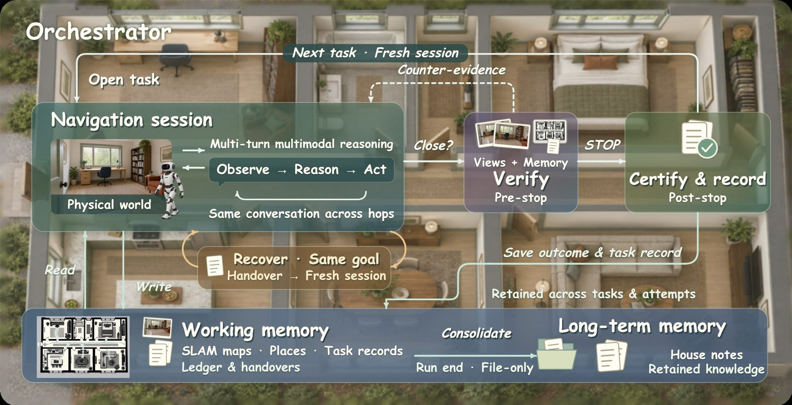
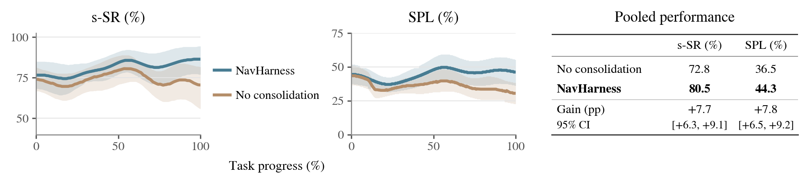

NavHarness orchestrates long-horizon embodied navigation through multi-round multimodal reasoning over working memory and house knowledge, retaining experience for successive tasks.
Abstract
Memory processing, inside the navigation loop
83.7%
GOAT-Bench s-SR with GPT-6 Astra, using SLAM-estimated rather than simulator poses
36.9%
GOAT-Bench e-SR: tours in which every subtask succeeds (strongest prior: 8.6)
85.9%
IR2R-CE s-SR with GPT-6 Astra (SeqWalker: 36)
+18.6–34.8
s-SR points over the same backbone in independent sessions, across four reasoning models
Frontier models can now perform well on individual embodied navigation tasks through multi-round multimodal reasoning with simple tools. Across successive tasks, however, an agent must also rely on an evolving map and earlier search records, both of which may be incomplete or conflict with new observations. We present NavHarness, a training-free embodied harness towards lifelong navigation that makes memory processing part of the navigation loop. During navigation, its multi-round agentic session draws on maps, task records, and house knowledge, checking them against observations and recording corrections to guide its actions. NavHarness preserves this experience across fresh conversations for new tasks or recovery attempts, while outcome verification and run-end summaries support its later reuse. On GOAT-Bench, NavHarness improves s-SR over context-only independent sessions by 18.6 points with Astra and 22.6 with Opus 5. Using SLAM-estimated poses, NavHarness with GPT-6 Astra achieves state-of-the-art task success of 83.7 s-SR with 36.9 e-SR on GOAT-Bench and 85.9 s-SR on IR2R-CE. To understand these gains, we examine how experience is carried between sessions and find that structured recovery handovers outperform length-matched summaries. In extended deployments across houses, consolidation improves navigation beyond retaining maps and task records, with case studies showing how agents use earlier experience to interpret new goals, investigate unresolved questions, and resume failed searches. We suggest that progress towards lifelong navigation depends on how successive reasoning sessions build on prior experience, alongside improvements in single-task capability.
Method
Fresh conversations, retained experience
An outer orchestrator opens a fresh multi-round agentic session for every task and every recovery attempt. The robot keeps its position, maps, task records and house notes; only the conversation is replaced. Sessions reach that experience through file and map tools, compare it with what they see, and leave corrections for the next session.

NavHarness execution flow. The orchestrator manages navigation sessions and persistent memory. Verify and Certify denote pre-stop verification and post-stop certification, respectively.
Tier 1 · one attempt
Active context
The current goal
Reasoning and observations
Information retrieved by tools
Replaced at every task and recovery boundary.
Tier 2 · across tasks & attempts
Working memory
Occupancy maps built from SLAM-estimated poses; named places with photographs; room and floor connections
Task records (the journal): ledger, task handovers, recovery notes, completion-check results
Written by sessions (handovers, notes) and by the orchestrator (maps, verdicts, ledger).
Tier 3 · across runs
Long-term memory
House notes: an index, a house overview, room notes and navigation skills
Room connections, landmarks, useful routes, failed searches, places ruled out by evidence, unresolved questions
Read by navigation sessions; updated only by run-end consolidation.
01
Start with retained experience
A new goal opens a fresh conversation that is told which handovers, ledger entries and notes to read before moving.
02
Navigate by consulting memory
Observation, reasoning and action interleave with map queries, file reads and marked places. Actions: forward 0.25 m, turn 15°, STOP.
03
Recover with a fresh conversation
A stuck session writes a recovery note (searched vs. ruled out, untried options) before a new attempt at the same goal continues from the same spot.
04
Check completion
A separate judge sees four stop views, earlier frames and the map. A contradicting verdict sends evidence back once; certification records the outcome.
05
Consolidate for the next run
At run end a file-only session rewrites the index, overview, room notes and skills, separating checked outcomes from claims.
Results
State of the art without simulator poses
Validation-unseen splits; all 2,669 GOAT-Bench subtasks in 360 episodes across 36 scenes. Ours: mean ± s.d. over three seeds. NavHarness uses no simulator pose, global navmesh, auxiliary perception model or navigation-specific learned policy.
What carries navigation across tasks and attempts?
Opus 5 on the full GOAT-Bench validation-unseen split with matched task budgets, three seeds. Each bar is the paired s-SR change from the full harness, with its 95% confidence interval.
A longer conversation is not memory.A single session continued across tasks scores 54.9, below fresh independent sessions at 58.9: it keeps outdated goals and observations that compete with the current task.
Both maps and records carry weight.Clearing the map costs 12.6 points and hiding task records 9.7; with neither, later tasks lose 14.7 points and repeat searches that retained experience avoids.
How experience is handed over matters.A matched-length ordinary summary trails the structured handover by 8.3 points; another task's handover is worse than an empty one.
Continuous deployment
Ten tours per house, across simulated days
We concatenate ten GOAT-Bench tours per house. At each tour boundary the robot is placed at the next prescribed start, like resuming after a shutdown, and must recover its bearings with SLAM and stored house knowledge. Across all 36 houses with Opus 5, we compare NavHarness with a No consolidation control that keeps maps, task records, recovery, verification and budgets, and disables only run-end consolidation into house notes.
s-SR 72.8 → 80.5 (+7.7, 95% CI [+6.3, +9.1])SPL 36.5 → 44.3 (+7.8, 95% CI [+6.5, +9.2])

Continuous deployment across 36 houses with Opus 5, varying only consolidation. Curves over normalized task progress; the table reports pooled scores, paired gains and 95% CIs.
Every task in three houses, both runs
One cell per task in order, by environment truth. Hover a cell for the goal and both outcomes; click it to see which notes the full run opened. Numbered dots are the paper's fourteen case studies.
successfailureday boundary
Select a task or a case.
Episode replays
What the sessions actually did
Each replay is rebuilt from the deployment logs: the model's own messages, the notes and stored photographs it opened, the camera frames it requested, its completion claim, the judge's verdict, and the environment's ground truth. Nothing is re-enacted; long searches are shown with sampled frames. Goal photographs are re-rendered from the GOAT-Bench goal pose.
Memory helps
Memory misleads
Loading replays…
Limitation. Memory reliability remains open. An incorrect completion accepted by the judge can propagate into house notes (Case 7: a lamp table certified as the dresser is copied into a room note and a skill), and correcting one record does not necessarily update its copies or validate other spatial claims.
Code
Running it
An experiment is one configuration file; the command line picks the reasoning core. Code will be released with the paper.
# wiring check: the real CLI against a scripted endpoint, no tokens
python runner.py std_goat_slam_es_lhnav harness=navh model=opus-5 api=fake run.episodes=0
# one GOAT-Bench chain, Claude Code holding the sessions
python runner.py std_goat_slam_es_lhnav harness=navh model=opus-5
# the same chain with the Codex CLI, or an open model through mini-swe-agent
python runner.py std_goat_slam_es_lhnav harness=navhcodex model=gpt-6
python runner.py std_goat_slam_es_lhnav harness=navhmini model=qwen3.8-27b
Citation
BibTeX
@misc{zhao2026navharness,
title = {NavHarness: Towards Lifelong Embodied Navigation},
author = {Zhao, Xunyi and Zhou, Jian and Lin, Sihao and Zhou, Gengze and Li, Zerui and
Yan, Xinyu and Liu, Jiajun and van den Hengel, Anton and Wu, Qi},
year = {2026}
}